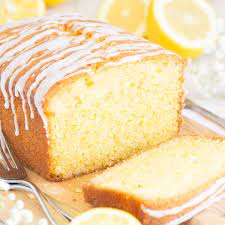

Lemon Drizzle Cake Recipe

Description
What can I say its a lovely lemoney cake!
Ingredients
For The cake
- 225g unsalted butter, softened
- 225g caster sugar
- 4 eggs
- 225g self-raising flour
- 1 lemon, zested
For the Drizzle Topping
- 1½ lemons, juiced
- 85g caster sugar
Recipe
- Heat the oven to 180C/160C fan/gas 4.
- Beat together the butter and caster sugar until pale and creamy, then add the eggs, one at a time, slowly mixing through.
- Sift in the self-raising flour, then add the lemon zest and mix until well combined.
- Line a loaf tin (8 x 21cm) with greaseproof paper, then spoon in the mixture and level the top with a spoon.
- Bake for 45-50 mins until a thin skewer inserted into the centre of the cake comes out clean.
- While the cake is cooling in its tin, mix together the lemons juice and caster sugar to make the drizzle.
- Prick the warm cake all over with a skewer or fork, then pour over the drizzle – the juice will sink in and the sugar will form a lovely, crisp topping.
- Leave in the tin until completely cool, then remove and serve. Will keep in an airtight container for 3-4 days, or freeze for up to 1 month.
Return To Index Page